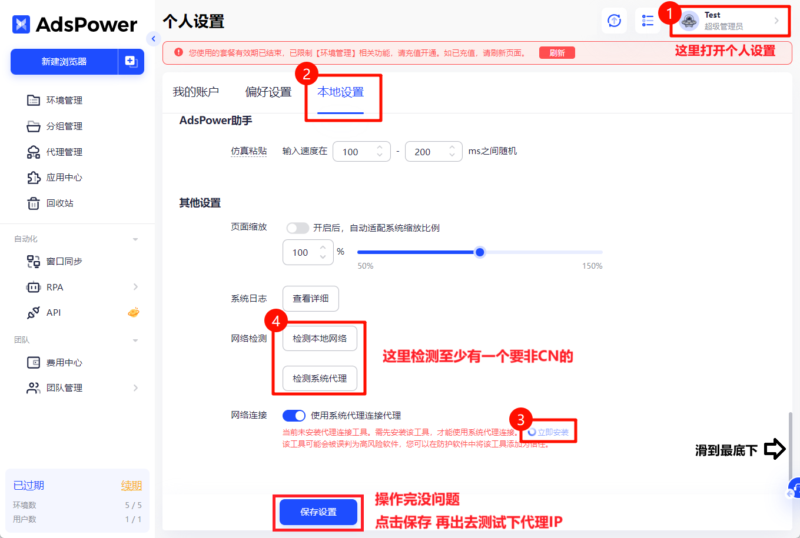

为什么连接不成功？（电脑用户）
一、海外IP代理服务需要您具备全局的海外网络环境，如果您正在使用网络加速工具请开启全局模式（一般的网速加速工具都会有tun模式，或者虚拟网卡设置，开启即可变成全局）并尝试切换网络节点，如有不懂之处可以联系您所使用的网络加速工具提供商协助处理（👉可以点此查看网络检测教程）
注意：代理信息由4个部分组成，分别由代理主机，端口号，代理账号以及代理密码，信息缺一不可，否则也会连接失败。
二、如果您使用的是Adspower浏览器，您的网络加速工具，请开启全局后，可以参考以下方式设置让其自动识别您的海外网络

三、如果您用的是比特浏览器，请在比特以下位置检查当前网络是否是非CN的网络，需要非CN的网络才能连上代理，如显示CN网络，用请您的网络加速工具后再检查。